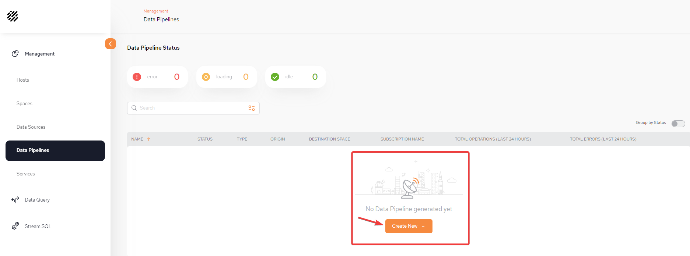
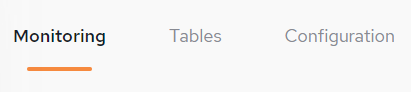

Data Pipelines allow a convenient, no-code method to pipe data from the System of Record to the GigaSpaces in-memory data grid.
A new data pipeline definition will include the definitions of the System of Record databases, tables and fields that will provide data to the pipeline. The definition also indicates the in-memory
Additional information includes optional validation rules and automatic conversion of specified field definitions.
From the Data Pipeline main screen, click Create New + to begin defining your first pipeline.

Three tabs are available: Monitoring, Tables, and Configuration:

Select Configuration.